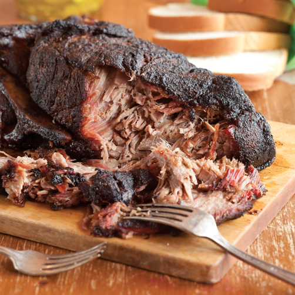

Pulled Pork

This is my favorite pulled por recipe. It does require a smoker of some kind as an over will not work with these settings. Smoke is important. This will give you some bomb ass tender pulled pork. Please remember food safety and do not consume undercooked pork.
Ingredients
- Smoker
- 10lb pork butt
- Seasoning of your choice (I like meat church pork rub
- Binder (mustard works great)
- Stand mixer
- Thermometer
Instructions
Please note that all smokers are different. Use what is best for you. I am using a trager pro
- Pre heat your smoker to 250 degrees
- Score your pork with a sharp knife in a hash pattern
- Rub a light layer of mustard on the outside of your pork butt. This should be a fairly light coating
- Cover your pork butt with a generous amount of seasoning. This will help the bark form
- Put your pork butt on the smoker. Smoke for 8-12 hours.
- When pork is fork tender remove from grill and let rest for 30 minutes
- Cut into manageable chuncks and throw into your stand mixer to shred. Or use your hands
- Enjoy